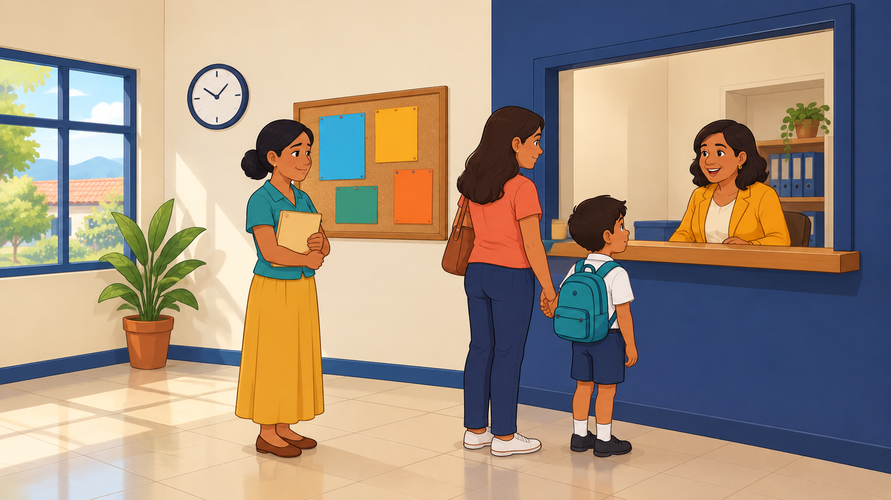

1
0:00 – 0:15
Lunes de febrero

- Imagen y acción
- Lunes de febrero, mañana. Ventanilla de una escuela. Una madre con una carpeta con documentos bajo el brazo espera su turno y deja pasar a otra familia.
- Voz en off
- Gaby: Es un lunes de febrero. Una madre espera su turno en la ventanilla de la escuela.
- Texto en pantalla
- Sin texto.